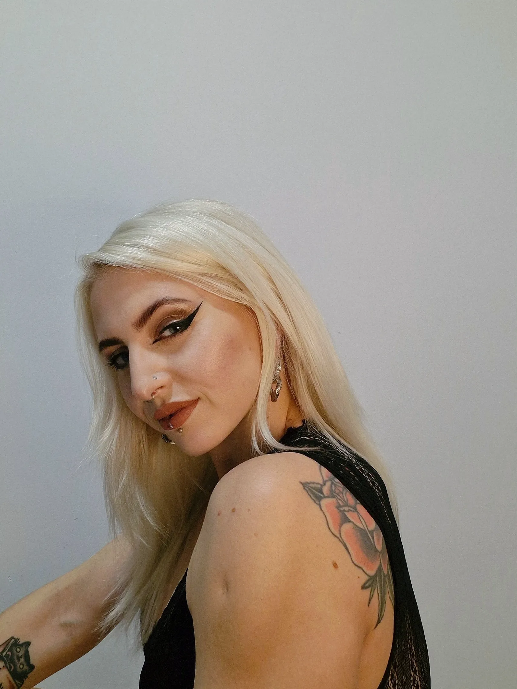

With a Bachelor’s in Textile and Fashion design and a personal aesthetic rooted in the avant-garde, I live at the intersection of dark subculture and high-street vibancy. While my personal uniform is strictly black, my professional world is a playground of colors and patterns. Though I find my personal inspiration in the dark, structural work of Rick Owens and Viviene Westwood’s punk heritage, I thrive on the challenge of bringing bold, chromatic concepts to life for major brands. My portfolio reflects years of styling for Emporium, where I balanced commercial requirements with a distinct, colorful energy.
Contact:
hudournik.vita2@gmail.com
+386 31 510 726